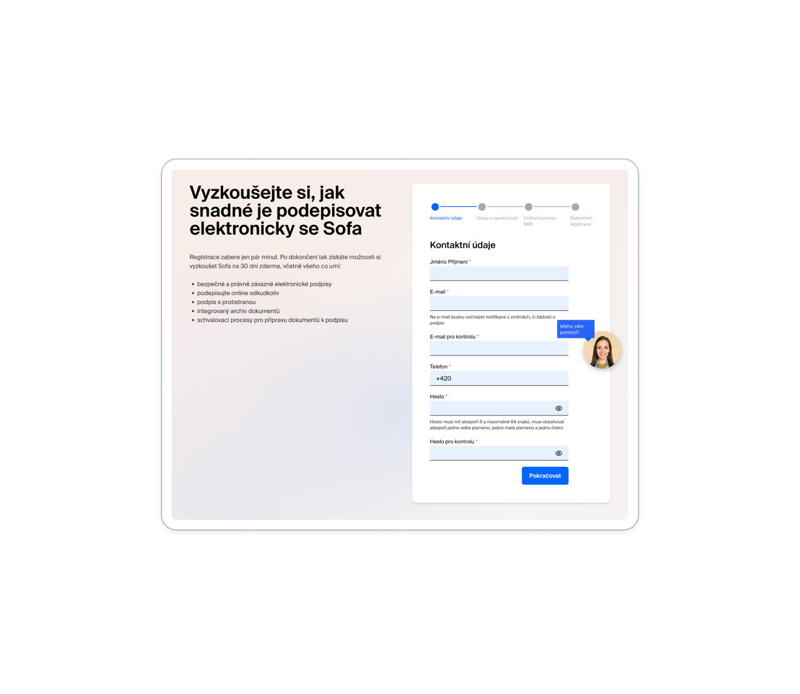
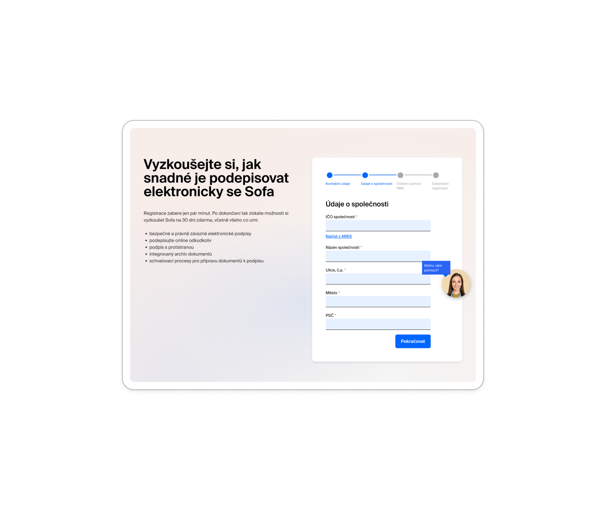
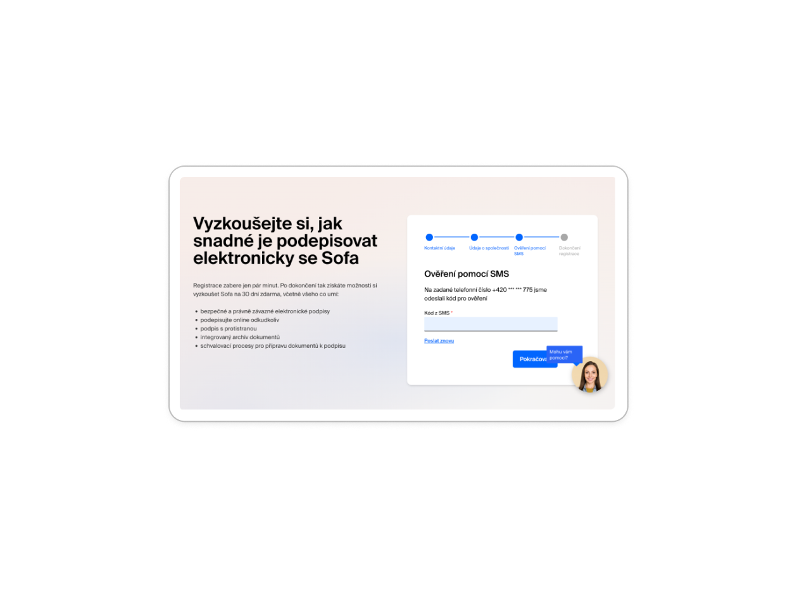

Redesign registrace pro Sofa SignPoint
Jak jsem snížil friction z 9 kroků na 3 kroky (a proč ne na 2)
TL;DR
Původní registrační flow měl 9 kroků a zabíjel konverzi. První pokus o redesign ho zredukoval na 2 kroky - ale měl bezpečnostní problém.
Finální řešení: 3 kroky s email i SMS verifikací + auto-login = 67% redukce kroků, bezpečný proces, time to value < 2 minuty.
Toto je case study o tom, jak balance mezi UX a bezpečností - a proč je důležité challengovat vlastní řešení.
Současný stav: 9 kroků frustrace
Začněme tím, co uživatelé musí projít dnes. A je to long journey...





Kompletní breakdown současného flow:
- Formulář - Kontaktní údaje Jméno, email (2x), telefon, heslo (2x)
- Formulář - Firemní údaje IČO, název firmy, ulice, město, PSČ
- SMS verifikace Zadání 6místného kódu
- Kontrola emailu Otevřít schránku, najít email
- Klik na email link Přejít na aktivační stránku
- Klik "Activate account" Další klik na tlačítko
- Klik "Log in" Přejít na přihlášení
- Zadat email + heslo znovu Credentials, které jsem zadal před 5 minutami
- Zavřít onboarding Video tutorial s vysvětlením základů
⚠️ Klíčové problémy:
Duplicitní pole: Email 2x, heslo 2x - pattern z doby před show/hide tlačítky
Double verification: SMS + email aktivace - proč obojí?
Re-authentication absurdita: User zadal credentials, pak je musí zadat znovu
Onboarding overhead: Tutorial před tím, než user cokoliv zkusí
První pokus: 2 kroky (ale s problémem)
Můj první návrh byl agresivní: zredukovat na absolutní minimum.
První návrh flow:
- Formulář Jméno, email (1x), heslo (1x s show/hide), telefon, IČO (volitelné)
- SMS verifikace + auto-login 6místný kód → okamžitě přihlášen
🤔 Moment... je tohle bezpečné?
Problém: Email nikdy není verifikován. Co když user udělá překlep v emailu?
Důsledky:
❌ Nemůže si obnovit heslo (email neexistuje nebo patří někomu jinému)
❌ Nedostane důležité notifikace o dokumentech
❌ Pro e-signature platformu je email KRITICKÝ - tam se posílají podepsané dokumenty
Verdict: SMS only verification není dostatečné pro platformu, kde email je primární komunikační kanál.
Co jsem se naučil:
"Fastest isn't always best." Ano, 2 kroky jsou rychlejší než 9. Ale pokud ten rychlý proces vytvoří bezpečnostní nebo UX problém později (user si nemůže obnovit heslo), není to dobrý trade-off.
Email verification má důvod. Není to jen legacy pattern - skutečně ověřuje, že email patří uživateli a že tam může přijímat důležitou komunikaci.
Finální řešení: 3 kroky s balance
Po analýze bezpečnostních požadavků jsem našel optimal flow: zachovat email i SMS verifikaci, ale eliminovat redundanci a automatizovat přihlášení.
❌ Současnost: 9 kroků
- Formulář 1 Kontakty (duplicity)
- Formulář 2 Firma
- SMS Verifikace
- Email Kontrola schránky
- Klik email Link
- Klik tlačítko Activate
- Klik tlačítko Log in
- Login form Credentials znovu
- Onboarding Video tutorial
⚠️ První pokus: 2 kroky
- Formulář Všechna data najednou
- SMS + auto-login Okamžitě přihlášen
Problém: Email nikdy verifikován → riziko pro recovery a komunikaci
✅ Finální: 3 kroky
- Formulář Email, heslo, telefon, IČO (opt.)
- Email link "Aktivujte účet" → SMS verifikace
- SMS + auto-login 6místný kód → dashboard
Výsledek: Email i SMS verifikované, žádné re-authentication, 67% redukce kroků
✅ Jak finální řešení funguje:
1. Registrace: User zadá email, heslo, telefon (IČO volitelné s ARES auto-fill)
2. Email verification: "Aktivujte účet kliknutím" → link vede na SMS verifikační stránku
3. SMS + auto-login: Po zadání SMS kódu je user okamžitě přihlášen do dashboardu
Klíč: Email link nepotřebuje další klik na "Activate" - rovnou zobrazí SMS form. A po SMS není "klikni pro login" - je okamžitě přihlášen.
Proč toto řešení funguje
Bezpečnost ✓
Email verification: Garantuje, že user vlastní email a může tam přijímat dokumenty
SMS verification: Potvrzuje telefonní číslo (může být compliance requirement)
Password recovery: Funguje správně, protože email je verifikovaný
UX optimalizace ✓
Žádné duplicity: Email 1x, heslo 1x (s show/hide toggle)
Žádné redundantní kliky: Email link → SMS form (ne aktivační mezistránka)
Auto-login: Po SMS verification okamžitý přístup k dashboardu
Progressive disclosure: IČO volitelné, ARES auto-fill pro business usery
Měřitelný impact ✓
9 kroků → 3 kroky: 67% redukce
11+ polí → 5 polí: 55% redukce
Time to dashboard: 5-10 minut → <2 minuty (~75% rychlejší)
Re-authentication: Eliminováno
Co jsem se naučil z této iterace
1. Challenge vlastní assumptions
Můj první návrh vypadal skvěle na papíře - 2 kroky, super rychlý. Ale když jsem se zeptal "Co když user udělá překlep v emailu?", celé to spadlo. Vždy testuj edge cases a failure scenarios.
2. UX není jen o rychlosti
Nejrychlejší cesta není vždy nejlepší. 2 kroky s neverifikovaným emailem by vytvořilo problémy později (password recovery fail, missed documents). 3 kroky s proper verification je lepší trade-off.
3. Security a UX nejsou enemies
Email + SMS verification sounds like "více kroků = horší UX". Ale když to navrhnete správně (email link → SMS form → auto-login), zachováte security BEZ zbytečného friction.
4. Iterace je součást procesu
První návrh nebyl perfektní. A to je OK. Důležité je identifikovat problémy, analyzovat je, a iterovat. Finální řešení je výsledek myšlení, ne první nápadu.